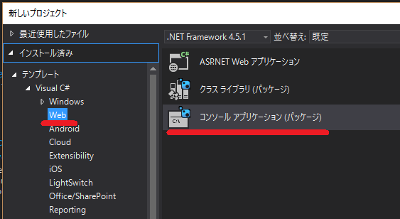
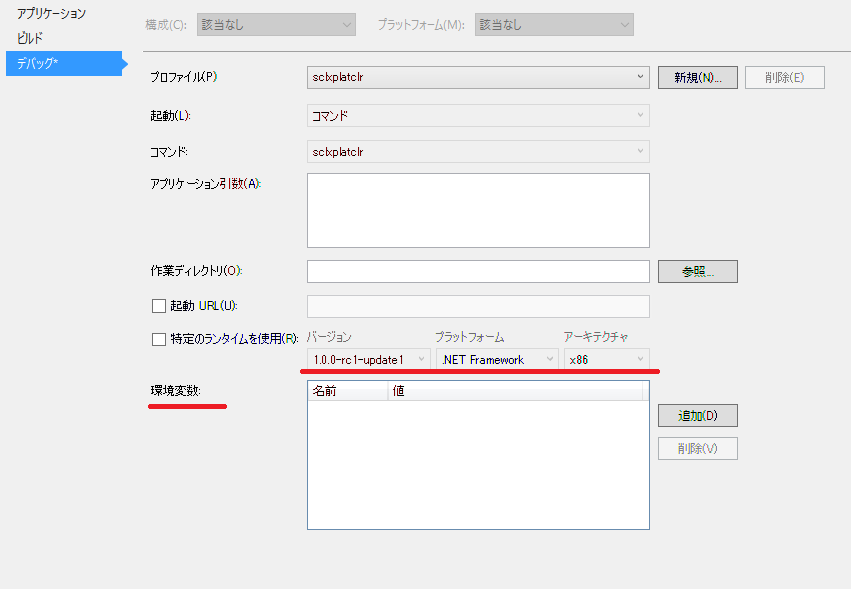
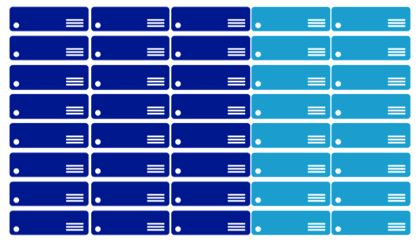
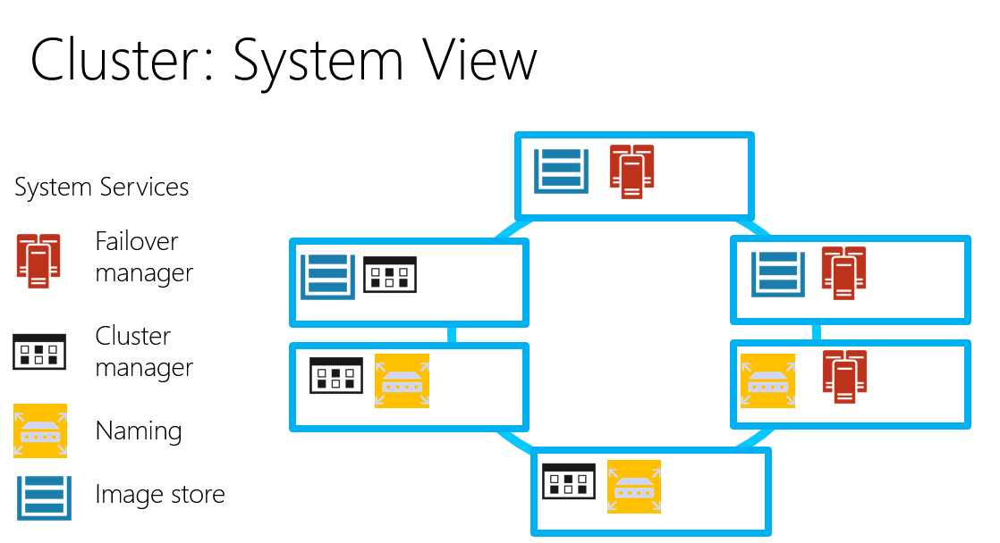

Azure Storage Client Library をDNXで使ってみた
Microsoft Azure Advent Calendar 2015 2日目
.NET 用のAzure Storage Client Libraryが、 6.1.1-preview (2015/10/30リリース) から DNXCore 5.0 にも対応しているので、どれぐらい動くのか簡単なコンソールアプリケーションを作ってみた。 ソースgithub.com/takekazuomi/scldnx-sample

環境
コードは、 Visual Studio 2015 Update 1 で書いて、dnx 関連のコマンドでコンパイル実行という流れ。最近なんやら、dotnetというコマンドも有るらしいが今回は使っていない。新規プロジェクトで、C# -> Web の下の、コンソールアプリケーション(パッケージ）というのを選択。（どうしてWebの下なのかさっぱり分からない）
これで、見慣れぬ構造でプロジェクトが出来る。ソリューションのフォルダーには、sln のファイルと一緒に global.json が出来、プロジェクト本体は、src/[プロジェクト名] の下に作成される。プロジェクトファイルは、project.json とJSONのファイルになっている。（コメント書けないのでJSONは止めて欲しい）
dnxは、最新の実行環境を使うことにした。今のところ、stable とか release に拘ってもあまり意味ないほどころころとよく変わっている。dnvm コマンドのインストール方法はプラットフォーム毎に違うが、その後はかなり同じような感じで使える。
$ dnvm upgrade -a x86 -r coreclr -u
dnvm upgrade で入れると、alias default が定義され PATHも切られる。dnvm installと、dnvm useを使って方が良いかもしれない。入っているかを、dnvm list で確認する。最後の行が active になっている。
$ dnvm list
Active Version Runtime Architecture OperatingSystem Alias
------ ------- ------- ------------ --------------- -----
1.0.0-beta5 clr x64 win
1.0.0-beta5 clr x86 win
1.0.0-beta5 coreclr x64 win
1.0.0-beta5 coreclr x86 win
1.0.0-beta7 clr x86 win
1.0.0-beta7 coreclr x86 win
1.0.0-beta8 clr x64 win clr
1.0.0-beta8 clr x86 win
1.0.0-beta8 coreclr x64 win coreclr
1.0.0-beta8 coreclr x86 win
1.0.0-rc1-15838 clr x86 win
1.0.0-rc1-15838 coreclr x86 win
1.0.0-rc1-15904 clr x86 win
1.0.0-rc1-15904 coreclr x86 win
1.0.0-rc1-update1 clr x64 win
1.0.0-rc1-update1 clr x86 win
1.0.0-rc1-update1 coreclr x64 win
1.0.0-rc1-update1 coreclr x86 win
1.0.0-rc2-16249 clr x86 win
* 1.0.0-rc2-16249 coreclr x86 win default
このあたりは、ASP.NET 5 の アドベントカレンダー のネタなので軽く飛ばします。[1]
コードの概要
基本的に、Azure Storage Client コード部分はほとんど従来の物と変わらない。
テーブルのリストを取る部分は、こんな感じ。
TableContinuationToken token = null;
do
{
var result = await _tableClient.ListTablesSegmentedAsync(null, null, token, null, null, cancellationToken);
result.Results.ToList().ForEach(table => Console.WriteLine($"{table.Name}"));
token = result.ContinuationToken;
} while (token != null);
ちょっと困ったのは、Table のQueryが Fluent Mode しかサポートしていなくて IQueryable Mode が使えないこと。[2]試しに、WADのPerformanceカウンターを保存しているテーブルを操作するコードを書たら下記のようになった。フィルターの部分が少々煩雑だ。
public async Task RunAsync(CancellationToken cancellationToken)
{
var sw = Stopwatch.StartNew();
var min = _fromDate.ToUniversalTime().Ticks;
var max = _toDate.ToUniversalTime().Ticks;
var table = _tableClient.GetTableReference("WADPerformanceCountersTable");
var query = new TableQuery<WADPerformanceCountersTable>()
.Where(TableQuery.CombineFilters(
TableQuery.GenerateFilterCondition("PartitionKey", QueryComparisons.GreaterThanOrEqual, min.ToString("d19")),
TableOperators.And,
TableQuery.GenerateFilterCondition("PartitionKey", QueryComparisons.LessThan, max.ToString("d19"))));
var result = new List<WADPerformanceCountersTable>();
TableContinuationToken token = null;
do
{
var segment = await table.ExecuteQuerySegmentedAsync(query, token, null, null, cancellationToken);
token = segment.ContinuationToken;
result.AddRange(segment.Results);
// Console.Write($"{segment.Results.Count}.");
} while (token != null);
Console.WriteLine();
sw.Stop();
Console.WriteLine("Count:{0}, Min: {1}, Max: {2}, Elapsed: {3:F2} sec",
result.Count, result.Min(e => e.PartitionKey), result.Max(e => e.PartitionKey), (sw.ElapsedMilliseconds / 1000.0));
}
余談だが、WAD(Windows Azure Diagonestics )のテーブルは、tickを”d19”で書式化したもので、パーテーションを指定すると時系列で絞り込むことができる。この方法は、パーテーションのレンジクリーになるので、時間的なパフォーマンスがあまり良くないが、パッチなどで使うならば結果のデータ量を絞り込めるという利点がある。時間的なコストが重要なシナリオでは、並列化を検討すると良い。
動かしてみる
Storageの接続文字列は、環境変数 AZURE_STORAGE_CONNECTION_STRING から拾うようにした。VSから実行するときは、プロジェクトのプロパティでデバックを選択し環境変数を設定する。デバック時に環境変数を設定出来るのは非常に便利、Visual Studio では今ままで無かったのが不思議なぐらい。ランタイムも選択できるが、dnvm install などで予め入れておく必要がある。
コマンドラインの場合は、下記のようにビルドして実行する。シェルの違いなどで若干違うが、ほとんど同じような感じで実行できる。便利である。
- Windows 10 TH2
$ $env:AZURE_STORAGE_CONNECTION_STRING="Azure Storage Key"
$ dnu restore
$ dnu build
$ cd bin\output\approot
$ .\sclxplatclr.cmd ListTable
- Mac OSX 10.11.1
$ export AZURE_STORAGE_CONNECTION_STRING="Azure Storage Key"
$ dnu restore
$ dnu build
$ cd bin/output/approot
$ ./sclxplatclr.cmd ListTable
実行しているのはテーブルのリストを取ってるだけの簡単なコードなので、結果は省略
最後に
結局、ubuntu 15.04 でやったのは下記のようになって動かなかった。[3]
$ dnu restore
failed to locate libcoreclr with error libunwind-x86_64.so.8: cannot open shared object file: No such file or directory
言語は同じC#でも、ライブラリ回りで細かい違いがあってなかなかコーディングの手間がかかる。今回だと、MEFを使おうかと思ったら dnxcore50 に対応してなくて、Microsoft.Framework.DependencyInjectionを使ってみたり、Environment.CurrentDirectory()が、dnxcore50 に無かったり、カレントのAppDomain取ろうとしたら出来なかったり[4]などなど。
でもまあ、単独のバイナリに変換されるようになると、クロスプラットフォームなコンソールツールを作成する手段として重宝するんじゃないかなとは思った。
| [1] | DNX環境のセットアップ、Installing ASP.NET 5 On Mac OS X、Installing ASP.NET 5 On Linux |
| [2] | Fluent Mode と IQueryable Mode については、Announcing Storage Client Library 2.1 RTM & CTP for Windows Phoneの Conceptual model の部分が詳しい。 |
| [3] | Installing .NET Core on Linuxでは、Ubuntu 14.04 TLS を使っている。RTMではなるべく14.04以降など広いバージョンのUbuntuをサポートして欲しいところ。 |
| [4] | Assembly.GetExecutingAssembly, AppDomain.CurrentDomain and similar |
Niigata.NET Page Blob Download 最適化
10/10(土) に、Niigata.NET 2015-10に参加してきました。日本酒とへぎ蕎麦が美味しかったのでまた行きたいところ。LTで話した（かった）ことをここにまとめておきます。

最初に
Azure Storage 上でデータの移動が必要な場合、現時点でもっともお勧めなのは、AzCopy[1]です、多めのデータをアップロード、ダウンロードしたい場合には AzCopyを試してください。[2]ほかのツールを使うよりリソースをうまく使って効率的にデータを転送してくれます。転送に必要な時間は、ほぼネットワークインターの速度に依存します。（諸条件に依存しますが、ざっくり言うと）
Azure Storage Data Movement Library (Preview)
AzCopyのライブラリー版 が、Azure Storage Data Movement Library (Preview)です。（以下 DML)[3]ライブラリなので、スクリプト＋AzCopyではちょっと難しいような細かい制御しながらデータの転送をすることが出来ます。DMLの実装では API の呼び出し方が Azure Storage に合わせてチューニングされていて、パフォーマンスが出るというのが大きな特徴です。DMLについては、Intro Azure Storage Data Movement Libraryも参考にしてください。
チューニングの基本戦略は２つです。これは、Azure Storage では共通の戦略となります。
- 並列化[5]
- 転送量の最小化
今回は、Page Blob での転送量の最小化の話をします。（DMLでは、その他にもGCとかLOH周りの工夫も使われています）
Page Blob Download 最適化
昨今の近代的なファイシステムでは、sparse file という仕組みを持っています。[6]大きなファイルであっても、zero の部分はDISK上にアロケートされずにデータが書きこまれた部分(緑の部分)だけが確保されます。
Azure では、仮想マシンのDisk は VHD ファイルを Azure Storage Page Blob に配置されており、そのPage Blobは sparse data の保存のための仕組みをがあります。仕組は結構簡単で、Page Blob では、データが書き込まれた部分をページ単位(512B)でレンジ管理しており、実際にBlobにデータが保存されるのはこの領域だけです。この領域の外を読むと0 fill のデータが帰ります。（これが、俗に言われるPage Blogが、Disk アクセスに最適化されているという機能の一つです）REST APIの GetPageRanges[7]では、有効なデータを含むすべての連続したページ範囲のリストを返します。[8]
つまり、GetPageRanges APIを使うと、Page Blob から実際にデータが入っている部分だけを取得することができます。例えば、100GBの仮想DISKであっても転送するのは実際使っている10GBだけにすることが可能になります。
DMLでの実装
DMでは、PageBlobReader.DoGetRangesAsync() でGetPageRangesAsyncを実行してRangeを取得[9]しています。
protected override async Task<List<Range>> DoGetRangesAsync(RangesSpan rangesSpan)
{
AccessCondition accessCondition = Utils.GenerateIfMatchConditionWithCustomerCondition(
this.Location.Blob.Properties.ETag,
this.Location.AccessCondition);
List<Range> rangeList = new List<Range>();
foreach (var pageRange in await this.pageBlob.GetPageRangesAsync(
rangesSpan.StartOffset,
rangesSpan.EndOffset - rangesSpan.StartOffset + 1,
accessCondition,
Utils.GenerateBlobRequestOptions(this.Location.BlobRequestOptions),
Utils.GenerateOperationContext(this.Controller.TransferContext),
this.CancellationToken))
{
rangeList.Add(new Range()
{
StartOffset = pageRange.StartOffset,
EndOffset = pageRange.EndOffset,
HasData = true
});
}
return rangeList;
}
ここはわかり易いですね。range list は、RangeBasedReader.DoGetRangesAsync() でダウンロードする範囲を決めるのに使われます。
ちょっと脱線しますが、Win32 APIでファイルシステムを操作する場合には、DeviceIoControl で FSCTL_QUERY_ALLOCATED_RANGES[10]を使うと実際にデータが保持されている range を取得することができます。
最後に
最後に、「Niigata.NET 2015-10」を聞きながら、思ったことを少し書きます。
プロジェクトで、最初にビルドとかnuget周りを揃えて置くのはとても良いと思います。msbuild 、nuget の闇に飲み込まれない範囲で華麗に捌いてくれる人が１人入ればイイデスネ。
make -> ant -> nant -> msbuild -> maven ... と使ってきたけど、小技を使い過ぎると分からなくなるのが問題で。ビルドファイルを、いろいろ弄っているうちに秘伝のタレ化して触れなくなりがちです。
package manager は、dnxで改善されるはずなので、それに期待したいところ。install.ps1 とか必要になるとソウルジェムが濁ります。
「MEF の、Core CLR 対応ってどうなっているの？」という話が出たので、帰ってきてちょっと見たら、ASP.NET 5 と Entity Framework 7 では、Microsoft.Framework.DependencyInjectionってやつが使われていました。聞いたことがあったような気もするけど、使ったこと無かったので少し試してみたら、どうも、container builder、setter injection などが無いようで、えらくシンプルな実装。でもまあ、これはこれで良いのかなという感じでした。
「コードが”短く”書かれている」のが良いって話は、総論としては文句無いですが、その台詞を聞いた瞬間「linq がすべてを台無しにしてしまったなぁ」と思いました。基本的に短い方が何をしたいのかが理解し易いけど、それがメモリとCPUにどういう影響を与えるかは別問題で、アルゴリズム、遅延評価、linq 関数の実装を理解しないとコード見ただけでは短い方が良いかどうか分からないのが現状でしょう。結局いろいろ考えても分からないので、データを用意して流してプロファイラに掛けるしか無いという現実があります。
これは Linq だけの罪かと言うと、そういうわけでは無く、「生産性の高いライブラリを使う場合に起こる一般的な課題」です。抽象化度の高いものは人間に理解し易く生産性の向上に貢献しますが、実際のノイマン型コンピューターの仕組みと乖離が大きくなり、実行ステップとコードの乖離も大きくなります。簡単に言うと、「こう書いたからこう動く」という世界から離れていくことになる。 じゃあ、乖離してはダメなのかという、そうでもない。全てはバランスによって決まる。ズルズルと、長くなったので、これぐらいで。
プログラムを読むことに関しては、このOSS全盛時代に読むコードに困ることは無いと思うので、ぜひガンガン読んで欲しい。
などなど、いろいろ思うことがあって面白かった。
追記
Azure Files でも同じように sparse file が、サポートされていて、DMLでは対応しています。
| [1] | AzCopy コマンド ライン ユーティリティの概要 |
| [2] | Azure Storage に関する Build 2015 での発表によれば、そろそろ日本にも Import/Export が来ます。Microsoft Azure Import/Export サービスを使用した BLOB ストレージへのデータの転送 |
| [3] | Introducing Azure Storage Data Movement Library Preview |
| [4] | Microsoft Azure Storage Data Movement Library (0.1.0)nuget Microsoft Azure Storage Data Movement... 0.1.0 |
| [5] | Intro Azure Storage Data Movement Library |
| [6] | Sparse fileMSDN Sparse File Operations |
| [7] | Get Page Ranges REST API |
| [8] | Getting the Page Ranges of a Large Page Blob in Segments |
| [9] | DoGetRangesAsync |
| [10] | FSCTL_QUERY_ALLOCATED_RANGES control code |
Intro Azure Storage Data Movement Library
先日（2015/9/23）、Microsoft Azure Storage Data Movement Library (Preview 以下 DML) というAzure Storage用のファイル転送ライブラリが公開されました。[1]
DML は、従来 Storage Client Library だけでは難しかったような、高速なファイル転送を簡単にアプリで実装できるようなライブライです。（ベースは AzCopyと同じらしい） Azure File、Blob、Local の ３つの間のデータ移動ができます。

下記のような、関数が揃っていて、sourceとdestをセットして呼ぶとその間でデータが転送されるって感じです。
public static Task CopyAsync(
Uri sourceUri,
CloudBlob destBlob,
bool isServiceCopy,
CopyOptions options,
TransferContext context,
CancellationToken cancellationToken
)
どんな組み合わせがサポートされているかとを表にまとめるとこんな感じ。このうちUrl->Blob, Url->FileのCopyだけ isServerCopy (サーバー側で実行される非同期コピー) のオプションがあります。Local to Local はサポートされていません。現在のバージョンでは、すべての処理はファイル（オブジェクト）１つの単位です。例えば、ディレクトリを指定して、その下をまとめてUploadなどのようなことはできません。表は横が転送元で縦が転送先です。
| 元/先 | Local | Blob | File | Url |
|---|---|---|---|---|
| Local | なし | DownloadAsync | DownloadAsync | なし |
| Blob | UploadAsync | CopyAsync | CopyAsync | CopyAsync※ |
| File | UploadAsync | CopyAsync | CopyAsync | CopyAsync※ |
isServerCopy(※付きのやつ) は、URLとして指定できるようなものならコピー元（ソース）にすることができます。public に公開されているURLなら、そのまま。private のものでも、S3のように、pre-signed URLが使えるならば、そのURLからAzure Storageにコピーすることが可能です。TransferManager.CopyAsync Method (Uri, CloudBlob, Boolean, CopyOptions, TransferContext, CancellationToken)
これは、DMLの機能というよりAzure Storage Blobの機能で、2012/6 に追加されたAsynchronous Cross-Account Copy Blobの副産物（？）です。[2]（気が付いて無かったですが orz)
- Introducing Asynchronous Cross-Account Copy Blob から引用
- Note: The source blob could even be a blob outside of Windows Azure, as long as it is publicly accessible or accessible via some form of a Signed URL. For source blobs outside of Windows Azure, they will be copied to block blobs.
「Note: 公開された url あるいは、なんらかのSigned URLのようなものなら Azure の外側でもかまいません。それは、block blob として copy されます」という感じでしょうか。DMLのAPIを見ると、Azure Fileにもコピーできますね、これは、2015/8/3 に公開された新機能です、Azure Files Preview Updateversion 2015-02-21 から利用できます。[7]
DML のGitHub レポジトリを見ると、S3から Azure Blobにコピーするサンプルコードが公開されています。S3ToAzureSample
余談ですが、このサンプルを読んでいて気になったことがあったので PR を出してみたらさくっとマージされました。[3]（軽微な修正ですが）
WAD Custom Log Downloader
とりあえず、なにか作ってみようと思い Azure Diagonestics の Custom Log をローカルにDownloadするアプリWADCustomLogDownloaderを書きました。AzCopyだけだと、ダウンロード対象のファイルのリストがどこか外部にあって参照しながらダウンロードするというのは効率悪くWADのCustom Logなどは不得意パターンでした。それをライブラリになったので、ちょっとやってみようという感じです。
環境変数AZURE_STORAGE_CONNECTION_STRINGに、StorageのConnection文字列を入れて、下記のように実行します。-f から、-t の間のFileTimeのログを、WADDirectoriesTable から探し対応するファイルをblobから、-d で指定したローカルディレクトリにダウンロードします。ちょっと動かしてみた感じだとAzCopyと同じような速度を期待できそうです。（ちゃんと計っていないのですが）
$ $env:AZURE_STORAGE_CONNECTION_STRING="YOUR_STORAGE_KEY"
$ ./WADCustomLogDownloader -container diagnostics-custom-logs -d c:\temp\logs -f 2015-09-10 -t 2015-09-23 -v
ここから、コードの解説をしながらコーディングしていて気が付いた点をいくつか並べていきます。
基本的な作り
ダウンロード対象のBlobのリストを、Azure Table の WADDirectoriesTable から読んで、BlockingCollectionに突っ込み、別TaskでBlockingCollection を読んで対象のBlobをダウンロードするという流れになっています。Producer が、ListWadCustomLogs()で、Consumer が、DownloadFromBlob()、その間を繋ぐ queue が、BlockingCollection _jobQueueです。
今回は、Producer が軽いので割と序盤で全部 queue に入ってしまって、順次 Consumer が処理するということになります。大量に対象のファイルがある場合、BlockingCollection の本領発揮なのでしょうが、今回は Producer–consumer problem[4]には引っかからない気がするので枠組みだけ使ってさくっと進みます。この基本構造は、DMLのS3のサンプルからいただきました、王道ですね。
Best Practice
パフォーマンスを出すには、DefaultConnectionLimit を増やすのと、 100-continue をOffにする必要があります。Azure Storage を使っている人にはお馴染みかと思いますが。
ServicePointManager.DefaultConnectionLimit = Environment.ProcessorCount * 8;
ServicePointManager.Expect100Continue = false;
ちなみに、ASP.NET環境下では、HttpRuntimeの初期化が走ると、HttpRuntime.InitializeHostingFeatures() から、いろいろ呼ばれて、HttpRuntime.SetAutoConfigLimits()で、下記のコードが実行されるので、DefaultConnectionLimit の変更は不要です。Consoleアプリや、WorkerRoleでは必須なので要注意です。
System.Net.ServicePointManager.DefaultConnectionLimit = Int32.MaxValue;
Producer ListWadCustomLogs
WADDirectoriesTable から、該当日付近のデータを取り出します。WAD(Windows Azure Diagonestics)では、PartitionKey にTickを使っているので日付をUTCにしてTickを19桁の文字列に展開します。ここは、Partition Queryなので、速度が必要なら分割してパラレルで実行した方が良いですが、実測で DC内で 100 ms/1000件 程度、西から東を見た場合でも、140ms/1000件、の時間でした。そのためあまり気にせず単純なクエリーで書きます。件数が多くなるのが想定できる場合は、適時分割した方が良いと思います。
ソース：WADDirectoriesTable から該当期間のログのエンティティを取得
そのあと、ExecuteSegmentedAsync() を使って、1000件毎にエンティティを取得し、jobQueueに入れます。全部入れ終わたら、_jobQueue.CompleteAdding()します。Consumer 側では、_jobQueue.IsCompletedがtrueなら処理終了と判断します。true になるのは、complete とマークされてて queue が空の時です。[5]これだけでもBlockingCollectionちょっと便利ですね。
今回は、BlockingCollectionの maximum capacity を設定していないので_jobQueue.Add(result.Results)はブロックしません。Producer と Consumer のバランスをとる必要がある場合は適時設定するといいでしょう。
Consumer DownloadFromBlob
_jobQueue に乗っている WADDirectoriesTable をTransferManager.DownloadAsyncに渡してダウンロードするタスクを作成します。ここは、Task の作成しすぎとかは、気にせずにグルグル回してしまって良く、実際のTaskのスケジューリングは適時 DML内でやってくれます。基本的には、4MB chunk で、DownloadRangeToStreamAsync を使って分割ダウンロード、chunk は、buffer pool を利用、core 数*8 を並列実行という感じです。
DMLソース：BlokBlob ダウンロードの実装部分
並列度は、TransferConfigurationsで設定できます。デフォルトは、core数*8、その下の行を見ると、chunk size は、4MB（固定？）です。使うメモリーは、Native Method の GlobalMemoryStatusEx()を呼んで物理メモリーサイズを拾っています。(なんと！)
そして、DMLの一番の肝は、 buffer pool と並列実行度をリンクさせたスケジューラーTransferSchedulerTransferSchedulerですね。Blobでパフォーマンスを上げるなら並列度を上げるのが重要で、大きなファイルを扱うためにはGCを避けるのが王道なので、こんな感じになるのかという気がします。
DMLの中に脱線していました、まだあまり読めてないのですが、いろいろ参考になるコードだと思います。
Consumerの細かいところを説明すると、大体４点
- ダウンロード済みのファイルがあればSkipする：TransferContext.OverwriteCallbackで、ダウンロード先にファイルがあるかどうかを見ています。WADDirectoriesTable の中のFileTime、FileSize と比較して同じだったらスキップとしています。WADDirectoriesTable のデータを参照するために、_sourceFileDictionary を参照しているのがイマイチな気がします。OverwriteCallback に、オプションのobject とか渡せれば解決なのですが…
- MD5 Validation をOffにする：DownloadOptions.DisableContentMD5ValidationWADのCustom log 転送を使って転送したBlobにはMD5Sumが付いていないので仕方ない。ここはOffです。WADDirectoriesTable の FileSize と同じかどうかを確認できるので大丈夫かな？と思いますが、選択できても良い気がします。MD5Sumの計算はコストが高いのでなるべく避けたい気持ちもわかりますが。
- TransferException をハンドルする：TransferExceptionここでは、TransferErrorCode の TransferAlreadyExists、NotOverwriteExistingDestination を特別扱いしています。 TransferContext.OverwriteCallback で、false を返すと、NotOverwriteExistingDestination が帰ります。今回はすでにダウンロード済みの場合は、スキップしているのでエラーではありません。 TransferManager.DownloadAsync に、同じ source, dest のセットが追加されると TransferAlreadyExists が発生します。今回は、WADDirectoriesTable に残っている転送履歴からBlobを探しているので、複数回転送されると TransferAlreadyExists になります。これは、WAD の Custom Log転送をどう使うのかという話にも絡みますが、今回はスキップで扱います。[6]
- ダウンロード後のファイルのタイムスタンプを合わせる：File.SetLastWriteTimeUtcここは、見て通りです。よく見ると、余計なcaptureがあるし、cancel とかの場合の分岐が出来てませんね orz ....
あとは、 CountdownEvent を使って、全部のTaskの終了を待ちます。ProgressHandler をフックすると、転送量とか転送ファイル数のステータスをもらえるのは便利です。
まとめ
ちょっと長いコードになりましたが、割と簡単に効率的な転送プログラムが実装できました。DMLの内部構造を見てわかる通り、CPUとメモリーがある程度あるマシンでないと本来の性能が発揮できない傾向があります。合計1.6GB の50本ほどのlog を D1とD3の両方でダウンロードしてみたところ、D1で 12 Mbps ぐらい、D3では 800 Mbps ぐらいのスループットになりました。（速度を見るにはもう少し本格的にやってみないといけないので参考程度ですが）
exe 単体で動作するように、 Release Build では、ILMergeで、wadcldl.exe を作っています。
環境変数 AZURE_STORAGE_CONNECTION_STRING にStorage Account Keyをセットするスクリプトsetenv.ps1を入れてあるので参考にしてください。実行前に、Add-AzureAccount をします。
| [1] | 2015/9/23 Introducing Azure Storage Data Movement Library Preview |
| [2] | Introducing Asynchronous Cross-Account Copy Blob |
| [3] | Dispose GetObjectResponse object. Here are many run. |
| [4] | Producer–consumer problem |
| [5] | Reference Source BlockingCollection.IsCompleted |
| [6] | TransferErrorCode Enumeration |
| [7] | MSDN Copy File |
Go (5) JAZUG で Service Fabric の話をします
今週末、9/5のJAZUG5周年記念イベント「ごーごー じゃずゆーじー」 Go(5) JAZUGで、Azure Service Fabric[1]をネタに酒井さんと話をします。宣伝とメモを兼ねてちょっと予告編です。興味を持たれた方は是非ご来場下さい ↓click↓
Azure Service Fabric とは
Azure Service Fabric は、BUILD 2015 に先駆けて発表された、「スケーラブルで信頼性が高く管理しやすいクラウド向けアプリケーションの構築向けの分散型システム プラットフォーム」[2]です。
2015/4/20 に、Mark Russinovich が書いたBlog[3]、翻訳[4]から引用します。
- Service Fabric は、高度な制御プラットフォーム
- 開発者や ISV は、拡張性とカスタマイズ性の高いクラウド サービスを構築可
- ミッションクリティカルなクラウド サービスを提供してきたマイクロソフトの経験を基礎として開発
- 5 年以上にわたって実際に運用
- 基盤となるテクノロジは、Azure のコア インフラストラクチャに使用（実証済）
- Skype for Business、Intune、Event Hubs、DocumentDB、Azure SQL Database 、Bing Cortana などの基盤で利用
- 毎秒 5 億回を超える評価に対応可能な拡張性を持つ
ざっくりまとめると、「マイクロソフトでAzureのインフラとして5年以上使っている技術がベースにとなっていて実績もいろいろあるよ」ってことのようです。これまでのAzureだとCloud Native アプリケーションの Computing は、Cloud ServiceあるいはApp Serviceでということでしたが、新しい選択肢としてService Fabricというのが出てきたってことです。（まだ、preview でローカルの開発環境でしか動きませんが）
※ここでは、便宜上WebRole/WorkerRole を使うCloud ServicesをPaaSv1と呼び、それに対して、Service Fabric をSForPaaSv2と呼びます。
BUILD 2015のセッション[5],[6]や、ドキュメントを見ると機能が結構盛りだくさんなのですが、「SFが取り組んで問題は何なのか、何故必要なのか？」というのが分かりずらい、面白そうだけど、ﾍ(ﾟдﾟ)ﾉ ﾅﾆｺﾚ?って感じもします。
9/5 のセッションでは、Service Fabricが出てから既に、4カ月以上経っているし、「Azure Service Fabric とは」的な内容はさくっと流して、私が感じていたSFに対する疑問に焦点を当てて話をしてみようと思います。
Service Fabricが取り組んでいる課題
課題ですね、英語だとChallengeです。無理筋なのをやるとダメなやつですが、ここでは関係ありません。クラウド時代に突入してモダンなサービスは可用性とスケーラビリティを求められるようになりました。[7]
その結果、Cluster アプリケーションでは複数のマシンに配置されることになります（つまり分散、分割）。複数台で構成されているので障害時に全停止せず、台数を増やせば処理能力が増えてスケールすると言うのが基本的なストーリーです。
この考えに沿ったアーキテクチャの典型が、PaaSv1です。WebRole/WorkerRole を複数の障害ドメインのマシンに配置することで耐障害性を担保し、アプリケーションをステートレスにすることで、台数増加を性能向上に直結させ (Immutable Infrastructureってやつです) 、高可用でスケーラブルなサービスを構築するというのが物語の粗筋です。
これはこれで良いのですが、PaaSv1では、全てのRoleは仮想マシンを専有するような配置を行います。そのため、OSの設定やランタイムのインストールなど細かいことを自由にできるという大きなメリットがありますが「問題もあるよね」というのが今回の話しです。SFが、取り組んでいる課題はいろいろあるのですが、今回はこの配置に関する課題の話をします。
Static Partitioning 問題
PaaSv1では、Role毎に台数を増減できますが、複数のWebRoleを同一の仮想マシンで動かすことはできません。また、WebRoleとWorkerRoleを同一仮想マシンでホストすることもできません。[8]このようにRoleの分割が静的に行われているのを、Static Partitioning （静的分割？）と言います。Static Partitioning は、Role を増やせば、増すほど扱いづらくなりますし、ワークロードによっては事前に予測することが難しい場合もあり、リソースの利用効率という観点からはムダが生じやすい仕組みで、これは大きな課題ですね。
Static Partitioning はシンプルなせいか、Cluster アプリケーションで広く使われてきました。最初のHadoop とか、昔の twitter とかですね。その結果あちこちから問題が聞こえてくるようになりました。その課題の解法の1つとして注目されているのが、Apache Mesos などで導入された手法です。 Mesosだと、このドキュメントが面白いですBuilding and Deploying Application to Apache Mesos、ちょっと引用します。
Mesos 以前は、Static Partition（静的分割）だった。Static Partition（静的分割）IS BAD、とても扱いづらい。
- マシンの効率的な利用ができない
- 効果的なスケールが出来ない
- 障害の取り扱いが難しく、ダウンタイムの発生を招く
リンク先には、「動的リソース割り当てが必要だ。 Operating System === Datacenter で、Mesos => data center のkernelだ」というようなことが書いてあります。Hadoopも、台数増えてくると十分Nodeが働かないという問題がありました。[9]
確かにサービスを構成するアプリケーションを複数のコンポーネントに分けた場合、（例えばWeb Frontと、管理サイト、日時バッチ、月次バッチとか）。それぞれ、ワークロードも違えば、開発サイクルも違う。これを、クラスターに最適配置しようとするといろいろメンドクサイ。PaaSv1で、現実的な解はRoleを分けることですが、月次バッチはWebFrontのオフピークの夜間にして効率的な運用をなどを考えると面倒なことになってくる・・・
Dynamic Partitioning
Mesosから離れて、Service Fabric でどうしているのかを見てみます。 Service Fabric では、複数のNodeでクラスターを構成して、アプリケーションは同一Node内に複数配置することができます。どのように配置するかは、アプリケーションが要求を出して、配置条件にあたところにService Fabric が配置するという流れです。配置条件は、サービス マニフェストまたはアプリケーション マニフェストを使用するか、コード内で直接定義します。[10]
Node内に複数のアプリケーションを配置することができ、リソースの有効利用を実現します。YARNとかMesosとかも同じようなことができます。このあたりの考え方は最近のトレンドのようです。
Cluster Manager [11]
このように、Datacenetrから仮想マシンをまとめて借りだして Cluserとしてプールし、アプリケーションの要求に応じてリソースを割り当てるのコンポーネントを、Cluster Managerと呼びます。（最近のクラウド界隈は、混沌としているので名称はちょっと曖昧さがあるけど）代表的なCluster Managerを、Service Fabric も含め上げておきます。Hadoop MRv1 では JobTrancker がボトルネックとなって働かない Node 問題が発生しており、YARNが対策として作成されました。いずれの、Cluster Manager (YARN では、Resource Managerと呼ぶ）も、万単位のサーバーを扱うの前提で作成されているので完全に１つのリソースプールに全部入れてしまって、そこからリースするような使い方でも行けそうです。
最後に
こんな感じで、Service Fabricがアプリケーションをクラスターに配置してくれるので、リソースとアプリケーションの分割の関係を柔軟に構成することができます。ワークロードと配置の関係をコード外でコントロールできるのは、なかなか嬉しい感じです。今回は時間の都合上入れられないと思いますが、開発支援、運用支援の機能もService Fabricには盛り込まれていて、かなり拾い範囲をサポートした分散型システム プラットフォームと言えそうです。
ソフトウェアの基本は、「分割して統治せよ」だと思いますが、残念ながら分割にはもろもろのメリットとデメリットがあり、過剰な分割はデスマーチの元という面もありました。Service Fabricは、今風に多くの問題を解決し次世代クラウドアプリケーションの作成に役立ってくれそうで
※Spark は、複数のCluster Managerに対応していて、これはこれで面白いと思います。
| [1] | Service Fabric の概要 |
| [2] | Service Fabric ドキュメント |
| [3] | Announcing Azure Service Fabric: Reducing Complexity in a Hyper-scale World |
| [4] | 翻訳：Azure Service Fabric を発表: 高度なスケーラビリティをより簡単に実現 |
| [5] | BUILD 2015, Mark Russinovich, The Next Generation of Azure Compute Platform with Mark Russinovich |
| [6] | BUILD 2015, Gopal Kakivaya, Microsoft Azure Service Fabric Architecture |
| [7] | クラウドだから可用性とスケーラビリティを求められるのか、両者が求めらるからクラウドなのかは ニワトリと卵の関係のような気もします。クラウドによって、いくつかの面でコストが抑えられるようになったので、現実的なビジネスでの適応局面が増えたという言い方もできるます。 |
| [8] | WebRole で複数Siteを定義すれば複数Endpoint Hostできます、また、WebRoleのRoleEntryPointのRunをoverride するとWorkerRole的なことが出来たりします。これらの方法の課題はアプリケーション間が無用に密接にくっついてしまっていることです。できるけど、イマイチやなという感じです。 |
| [9] | YARN の紹介 |
| [10] | サービス記述の概要 |
| [11] | Cluster manager |
| [12] | クラスターの説明 |
Cloud Service で NLog を使う
先日故合ってNLogのコードを見てたら、Cloud Service のカスタムログ転送で面倒なところが簡単に改善できそうだったので、ローカルストレージの定義を、NLogの設定ファイルに書けるようにした layout renderer ${azure-local-resource}NLog.Azureを作ってみました。

「Azure Diagnostics 1.3 PaaS BUGS」は、無事 1.4で改修されて再び使えるようになりました。これで、普通に使えるようになったのですが、相変わらず面倒がことが２つ。
- ローカルストレージからのカスタムログ転送はVSからの設定ができない
- ローカルストレージのパスはデプロイ毎に変わる
今回の趣旨は、２のデプロイ毎に変わるパスをNLogの設定ファイルに書くにはどうするかという話です。
ローカル ストレージ リソース については、MSDNの 「ローカル ストレージ リソースを構成する」 を見てください。
1. ローカルストレージからのカスタムログ転送設定
ここは前段です。残念ながら現在のVisual Studioでは、GUIでローカルストレージからのカスタムログ転送設定ができません。ここはdiagnostics.wadcfgxに手で書きます。たいして面倒でもなくDataSources のタグの中が今回追加した記述です。これだけで、ローカルストレージ LogStorage からBlobコンテナdiagnostics-custom-logs への転送を定義になります。
<?xml version="1.0" encoding="utf-8"?>
<DiagnosticsConfiguration xmlns="http://schemas.microsoft.com/ServiceHosting/2010/10/DiagnosticsConfiguration">
<PublicConfig xmlns="http://schemas.microsoft.com/ServiceHosting/2010/10/DiagnosticsConfiguration">
<WadCfg>
<DiagnosticMonitorConfiguration overallQuotaInMB="4096">
<DiagnosticInfrastructureLogs scheduledTransferLogLevelFilter="Error" />
<Directories scheduledTransferPeriod="PT1M">
<IISLogs containerName="wad-iis-logfiles" />
<FailedRequestLogs containerName="wad-failedrequestlogs" />
<DataSources>
<DirectoryConfiguration containerName="diagnostics-custom-logs">
<LocalResource relativePath="." name="LogStorage" />
</DirectoryConfiguration>
</DataSources>
</Directories>
... 省略 ...
</DiagnosticsConfiguration>
2. ローカルストレージのパスはデプロイ毎に変わる
これで、ローカルストレージ LogStorage へログを書けばカスタムログ転送でBlobへ送られます。しかし、Cloud Service だと起動するまでローカルストレージがわかりません。また、デプロイ毎に異なったディレクトリを割り当てられます。WorkerRoleでは、csdef でローカルストレージのパスを環境変数に入れておいて、NLog.config の中で、Environment layout rendererを使ってパスを展開するという技も使えます。しかしWebRoleがFull IISになって以来、csdefが解釈実行されるプロセスとアプリケーションが動くプロセスが別になったので、ローカルストレージのパスを環境変数に入れて、configに渡すという技が使えなくなりました。（WebRoleがFull IIS になったのは、はるか昔のAzure SDK 1.3のことですが）基本的には、Microsoft.WindowsAzure.ServiceRuntime の RoleEnviromentからローカルストレージのパスを取得するのですが、そのためにはNLogの設定をコードでコニョゴニョしないといけません。そこで、NLog の設定ファイルにローカルストレージのパスを展開できるような、layout renderer “${azure-local-resource}NLog.Azureを書きました。（名前がおおざっぱ過ぎたかもしれません）
バイナリがNuGetに上げてあるので、インストールはここからします。微妙な気もするので、まだpreviewにしてあります。
$ Install-Package NLog.Azure -Pre
これでインストールしたら、NLog.configに下記のように書くと実行時にローカルストレージのパスに展開されます。
<variable name="logDirectory" value="${azure-local-resource:name=LogStorage:default=c\:/Logs/}"/>
name という引数に ローカルストレージ名を書きます。default は、ServiceRuntime が存在しないとき、あるいはローカルストレージの定義が無い場合に使われるバスを書きます。Azureの本番環境あるいはエミュレータ環境では、ローカルストレージにログを書き、そうでない場合はdefaultで指定された場所にログを書くという風に使うことを想定しています。NLogは結構素直な出来で、ここまではすっきり、さくっとできました。log4net よりいい感じですね。
参考までに、簡単なWebRoleのプロジェクトをGitHubに上げてあります。NLog.Azure.Example
おまけ
実は、Microsoft.WindowsAzure.ServiceRuntime.dll には、再配布可能では無いという大きな問題があります。これはどういうことかというと、プロジェクトでServiceRuntime.dllを参照している場合、必ず Azure SDK を入れないと開発/実行できないということです。Storageなどのライブラリは、Azure SDK無しでもNuGet から落としてきたのだけで動くのに、ASP.NETの普通のプロジェクトとして作っていてもServiceRuntime に依存した瞬間にAzure SDKが必要です。NuGetからも入らないのでなかなかメンドクサイことになります。今回の ${azure-local-resource} layout renderer も、ServiceRuntimeを参照してしまうと、Azure SDK の入ってない環境ではアセンブリのロードでエラーになってしまいます。せっかく、defaultパラメータとか作ったのに意味が無い、単純なASP.NETのアプリはそのままでに動くようにしておきたいのに。
こんなとき、.NET では、アセンブリを直接参照しないで自前でロードしてリフレクションで関数を呼び出すという方法があります。今回はServiceRuntimeのアセンブリはGACに登録されているけど物理パスがわからない！、さて困った。そんなときは Fusion API でGACから探し出すのが上等手段です。[1]常套手段と言っても普通に暮らしてるとあまり出番ないですが。Fusion (Unmanaged API Reference)[2]は、GACに登録されているアセンブリを操作する Unmanaged API です、昔はドキュメント無かった気がしますが今は普通に書いてありますね。今回は、GACからアセンブリを探してパスを所得するのだけに使います。CreateAssemblyCache() を呼んで AssemblyInfo を取得し、AssemblyInfo を読むだけです簡単ですね。 コード的には、GetAssemblyPath()のあたり。あとは、リフレクションを駆使して、RoleEnvironment.IsAvailable とか、LocalResource.RootPath を呼んでいますが、ここはコード生成するべきかもしれません。 やっていることは簡単なのにメンドクサイ
最後に
ずいぶん間が空いてしまいましたが、2015/5/12 に、株式会社 kyrt にしました、先月には、2015年7月期、Microsoft Azure のカテゴリで、Microsoft MVP Award を受賞をいただきました。皆さまのおかげです、これらかもよろしくお願いいたします。
File System をバッファーとして使うロギングシステムではパフォーマンスに注意した方が良さそうです。Azure Diagonesticsを使うと、out-process の log collector でよしなにBlobへの転送をしてくれるので、直にBlobやTableに書くより良いとは思いますが、アプリとout-process の間のつなぎがFile System なのは信頼性は良いけどパフォーマンスが疑問です。そんなにログ書くのかという話はあると思いますが。そう考えるとアプリとlog collectorの間はETWが良いような気もします。ついでに、log collector でアーカイブだけじゃなくてリアルタイム系のフィルタリングとかやってくれると便利なんだけど。SLABに期待ですね。
| [1] | How to programmatically determine if .NET assembly is installed in GAC? |
| [2] | Fusion (Unmanaged API Reference) |